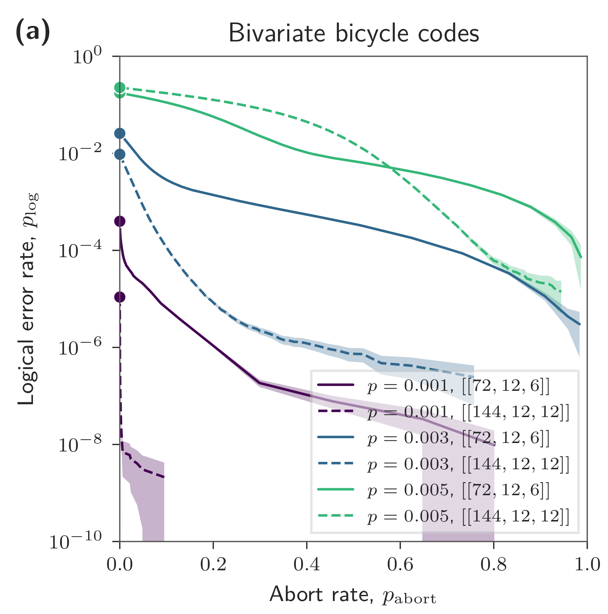

Abstract
- 1Centre for Engineered Quantum Systems, School of Physics, The University of Sydney, Sydney, New South Wales 2006, Australia
- 2Department of Quantum Information Engineering, Sungkyunkwan University, Suwon 16419, Republic of Korea
- 3Department of Quantum Engineering, Sungkyunkwan University
Post-selection improves the reliability of quantum computation by discarding low-confidence runs, at the cost of a reduced acceptance rate. Existing approaches based on the logical gap can become computationally expensive as the number of logical qubits increases. This poster reviews efficient post-selection methods developed by Lee, English, and Bartlett [1] for quantum low-density parity-check codes, using cluster-based metrics obtained from a single decoding run. Numerical simulations with circuit-level noise demonstrate substantial reductions in the logical error rate of accepted runs. For a 12-round memory experiment with the [[144,12,12]] bivariate bicycle code at a physical error rate of 0.1%, the method achieves an approximately 1,000-fold reduction while aborting about 1% of runs. The approach also extends to real-time decoding using a sliding window, enabling early abort decisions during circuit execution.

- S.-H. Lee, L. H. English, and S. D. Bartlett, “Efficient Post-Selection for General Quantum LDPC Codes,” arXiv:2510.05795 (2025).